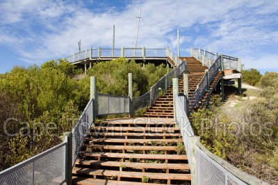
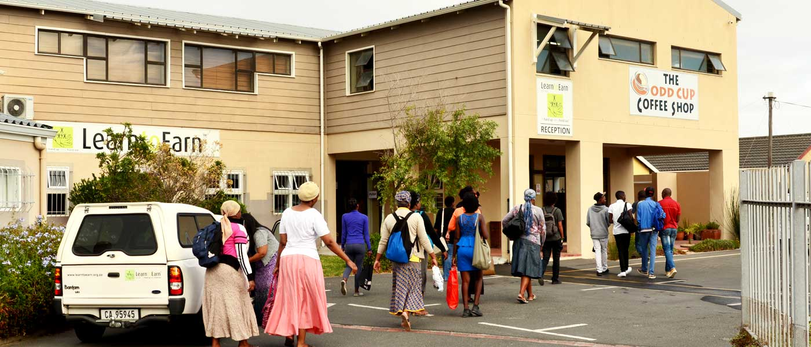
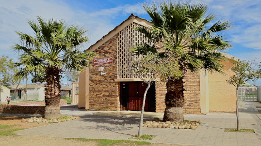
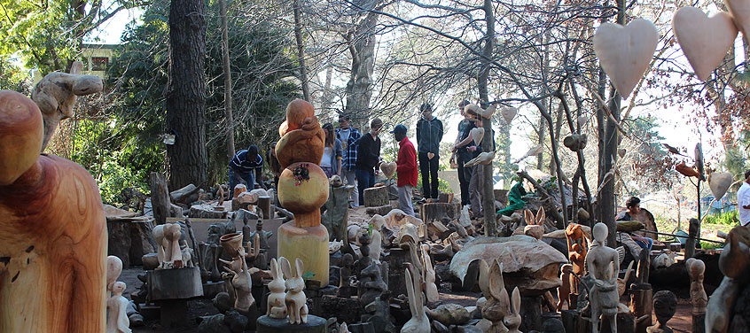
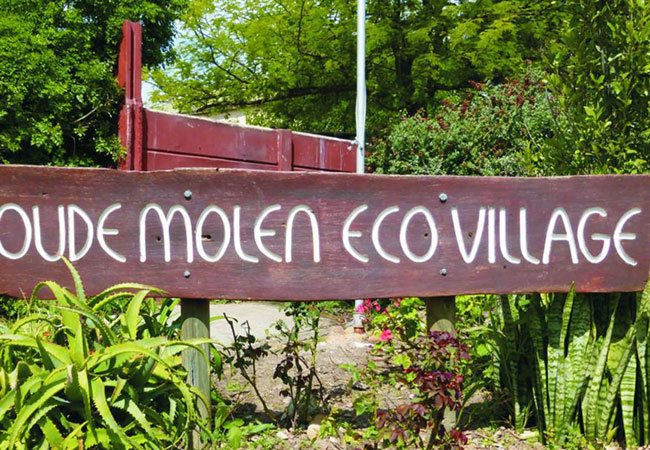
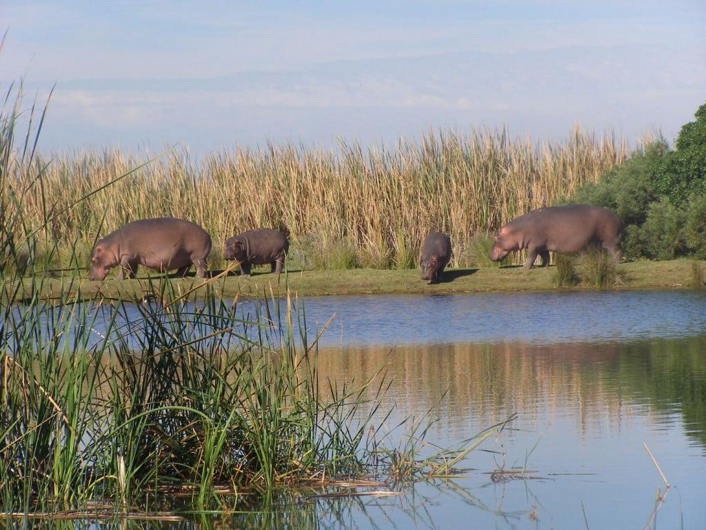
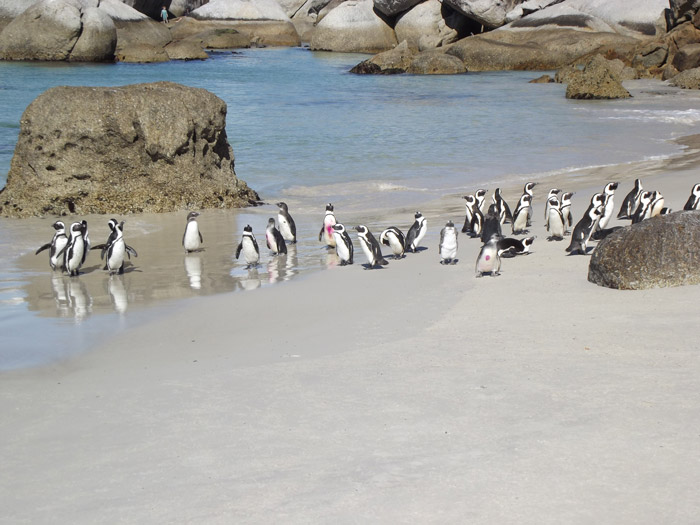

A person should care about cape care routes, because the routes gives our visitors and locals in Cape Town a chance and an opportunity to see how people live, how they grow their own food, how they build their own homes, and how they make crafts and the beauty of Cape Town.